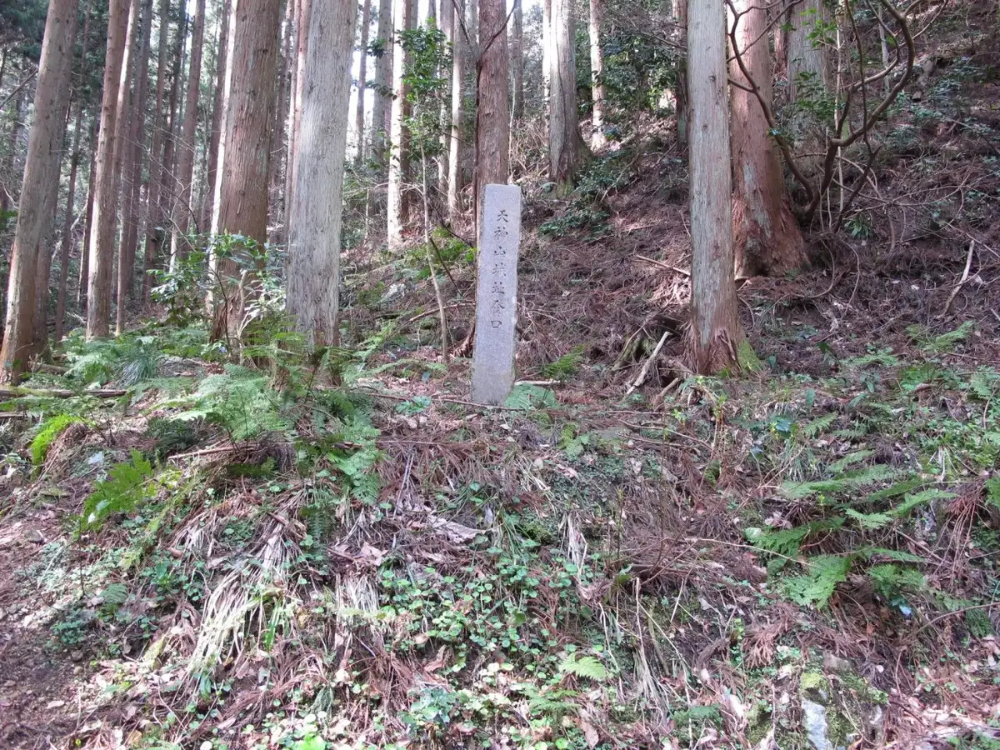
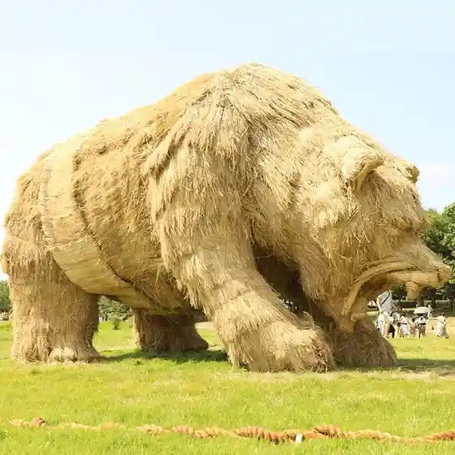
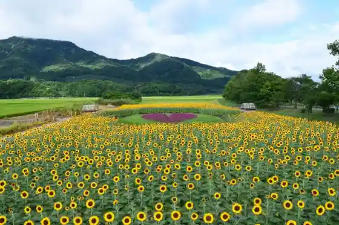

Niigata
Niigata · Niigata
Niigata
Highlighted on the Niigata map.

Sights
Minato no Marushie Pia Bandai
Niigata History Museum Minatopia
Wara Ato Festival

Ue Seki Kata Park

Befco Bakauke Tembo Shitsu
Hoppo Bunka Museum
Kuni Shitei Juyo Bunkazai (Mandai Hashi)
Roadside Station (Niigata Furusato Mura)
Kyu Saito Iebetsu Tei
Niitsu Onsen
Ataraso Ba Festival
Niigata Aquarium Marinpia Nihonkai
Niigata Sembei Okoku
Fukushima Kata
Kabudotchiwainarii
Yumotoya
Roadside Station (Toyosaka) (Kokudo 7 Gosen)
Nishikan Kanko Shuyu Guru N Basu
Poppo Yaki
Fukuju Onsen Jon no Bi Kan
Shinanogawa Yasuragi Tsutsumi Ryokuchi
Hakusan Park
Niigata Iwamuro Kenko Zoshin Center (Yu Gan no Yu Yorinare)
Akiba Onsen Kasui
Kyu Saito Iebetsu Tei Autumn Leaves Raitoappu
Toki Messe Niigata Kombenshon Center
Minato Inari Shrine
Echigo Nanaura Coast
Kakuda Hama Beach
Iwamuro Onsen
Roadside Station Hanayume Sato Niitsu
Kamon ! Kamo Negi Festival
Kakuda Yama Lighthouse Tozanguchi
Aoyama Kaigan Beach
Kakuda Yama
Taho Onsen Dairo Baths
Ramusaru Joyaku Toroku Shitchi (Sakata)
Furutsu Domu Yamada Farm
Niigata Art Museum
Hangan Fune Kakushi
Gokuraku Yu Meike Mise
Hiyoriyama Hama Beach
Kakuda Yama Gogatoge Tozanguchi
Kosudo Onsen Kenko Center Hana no Yu Kan
Bodai Terayama Haikingukosu
Niigata Niitsu Art Museum
Niigata Prefectural Botanical Garden
Ikeda Kanko Orchard
Befco Bakauke Tembo Shitsu (Shonichi no Shutsu Kansho)
Itarian (Mikazuki)
Niigata Prefectural Shizen Science Museum
Shichi Men Daimyojin Kyoka no Iwana
Niigata Ken Supotsu Park
Yuki Hari Sha (Setsuryosha) Art Museum
Mizu no Park Fukushima Kata Mizu no Eki (Byu Fukushima Kata)
Juyo Bunkazai Kyu Sasagawa Ie House (Sasagawa Tei)
Shirone Gurepu Garden
Tanaka Ya Honten Minato Workshop
Sekiyu Village
Nutari Terasu Shopping Street
Hoppo Bunka Museum Niigata Bunkan
Akiba Park
Niigata Iwamuro Kanko Shisetsu
Niigata Aguri Park
Toriyano Kata
Sekiya Hama Beach
Toriyano Kata Koen Kane Kiji Ku
Niigata Bunkazai Kyu Ozawa Ie House
MGC Mitsubishi Gasu Kagaku Aisuariina
Fuyu Sake Festival
Sekiyu no Sekai Kan
Umibe no Mori Campground
Niigata Hitotsubu Shuzo Echigo Village Kayama Tei
Furumachi Niigata Wodori
Shinanogawa Uotashatoru
Mangan Tera Toka Ki (Hasagi) Namiki
Taho Yama Marusho Sanko Sono Tozanguchi (Tenjin Yama Ruto)
Niigata Prefectural Mandai Shima Art Museum Kikakuten (Sakuramomoko Ten)
Mase Gezan Beach
Echizen Hama Beach
Kakuda Hama Campground
Niigata Niitsu Tetsudo Museum
Denkabiggusuwansutajiamu
Mase Ta no Ura Beach
Kakuda Yama Ine Shima Tozanguchi
Echigo Nanaura Kannon
Echigo Heiya no Mizukagami
Ko Town Sauna KUMORI
Kambara Shrine
Ta no Ura Onsen
Taho Onsen Dairo Baths
Niigata Kencho 18 Kai Tembo Kairo Nenmatsunenshi Kaiho
Sauna to Tennen Onsen Jon no Bi Kan
Shima Ken Hama Beach
Kondai Tsukasa Shuzo (Kabu) / (Kondai Tsukasa)
Niigata Ken Gokoku Shrine
Hachi Chin Kaki (Hatchingaki) Gemboku
Kakuda Yama Fukui Hotaru no Sato Tozanguchi
Sora no Terasu
Yama no Gesen Ko Town Hama Beach
Kuzutsuka City Shohin City
Niigata Sushi Zanmai (Kiwami)
SPA&LOUNGE Nagakata
Natsui no Haza Ki
Niigata Fureai Kenko Center Akua Park Niigata
Toriyano Kata Park
Tenjin Yamashiro Shi
Kakuda Yama Urahama Tozanguchi
Sasa Iwaizake Zo (Kabu) / (Sasa Shuku)
Endo Mi Memorial Museum Mi Sho Kan
Niigata Prefectural Mandai Shima Art Museum
Niigata Tare Katsu Domburi
Gokuraku Yu Makio Mise
Iwamuroya no Rentasaikuru
Nippon Bogaten
Takarayama Jozo (Kabu) / (Hozan)
Benten Sutando
Shirone Odako to Rekishi no Kan
Niigata Prefectural Mandai Shima Art Museum Kikakuten (Dai Dorobo no Ie)
Kakuda Yama Go Rin Ishi Tozanguchi
Ikutopia Shoku Hana
Kiwami to Niigata Washoku
Kakuda Yama Yu Yuki Koshi Tozanguchi
Tai Kuruma Totomoni Ajiwa U Nishikan no Banshaku
Gokuraku Yu Matsuzaki Mise
Akiba Onsen Kasui (Sauna)
Sakaguchi Ango no Bungaku Hi
Nishikawa Fureai Park
Toriyano Kata Koen Meike Chiku
Shirone Kanko Ki no Ko Sono
Tenju Sono
Echigobiiru
Tsukigata no Rui San Nashi
Niigata Furusato Mura GW Festival
Mizu no Park Fukushima Kata Yusui Kan
Niigata Manga no Ie
Ta no Ura Coast
Niigata Toso Go Supotsu Center
Niigata Manga Anime Johokan
Satoyama Bijita Center
Honmono no Te Burade Babekyu
Naiya Hama Beach
HUB STATION KENTO
Miso Kura Kengaku Mine Village Jozo
Marusho Yama Park
Daiei Tera
Hakusan Park Kuchu Garden Cherry Blossoms
Fukushima Kata no Na no Hana
Junsai Ike Park
Nashi Yokan
(Niigata no Miryoku Hakken ! Gata Basu Tour) Tore Tatewo Ajiwa U Noka Resutoran to Hoppo Bunka Museum Niigata Hitotsubu Shuzo
Ribasaido BBQ& Takibi in Mandai Terasu Hajimarihiroba
Iwamuro Onsen Machiaruki
Myorenji Yamato
Tenjin Sambu Mono Tamari
Suki Na Moyo no Orijinaru Shokkigakansei ! Te Burade Poseratsu Experience
Yama no Shita Market
Mamiya Sono
Kokodeshika Nome Nai Daiginjo 3 Sakenomi Mi Kurabe & Niigata Annai
Kitayama Ike Park
Migi Hayahiko no Dohyo
Ojinushi no Shokubunka Wo Ajiwa U Hagama O Zen
Tore Tatewo Ajiwa U Noka Resutoran to Hoppo Bunka Museum DHC Shuzo (Gata Basu Tour)
Niigata Ken Maizo Bunkazai Center
Niitsu Furawa Land
Kakubejishi
Kakubejishi no Sato Promenade
Shiokawa Shuzo (Kabu) / (Etsu no Kan)
Kiwami & Niigata Jizake Setto
Nakano Tei Memorial Museum
Nippon Boke Park
Kakube Jizo Mikoto
Sugo Hori no Sakura Namiki
Kameda Teiki Roten Market (San Kyu no City)
Erabe Ru Iro Ha 30 Shurui ! Iro Toridori no Tombo Tama Wo Tsukuro U
Sakura Promenade Park
Kakuda Yama Shizen Kan
Aguri Park Ura no Himawari Hatake
Kyu Niigata Zeikan Chosha Cherry Blossoms
Fukushima Kata & Hyo Mizumi Socho no Hakucho Kansho Eko Tour (Gata Basu Tour)
Kameda Sogo Gym (Asu Park Kameda)
Niigata Prefectural Kankyo to Ningen no Fureai Kan
Kowakingusupesu Shigoto Ba Lighthouse
Iwamuro Onsen Machiaruki (Rekishi Historic Site Wo Meguru)
Kuni Shitei Historic Site Ko Tsu Yahatayama Iseki
Katahigashi Folk History Museum
Satsumaimo (Imo Jiennu)
Iwamuro Onsen Fuyu Tsuma Hotaru
O Sugi Bara Sono
Osawa Forest Park
Dan Kazuo no Bungaku Hi
Onibasu
Niigata Minamiku no Orchard
160 Nen Tsuzuku Dento no Kamamoto De Hajimete Demo Tsukuri Yasui Te Binerini Chosen
Jiyu Ni Seikei Dekiru Te Bineri Kosu !
Mizu no Eki Byu Fukushima Kata Shogatsu Tokubetsu Kaikan
Kimono Sansaku Experience
Fukui no Hotaru
Kameda no Ume
Niigata Chuoku Wo Dendo Kikkubodorentarupuran De Rakuraku Shuyu !
Hana to Midori no Shimboruzon Urarakosudo
Kokushi Ato Ko Tsu Yahatayama Yayoi no Oka Tenjikan
Agano Kawa River Park
Yaki Funa no Kyuseki
Dento no Shuzokengaku & Kengai Ni Hotondo Dena I Sasa Iwaizake Zo no Kikizake Experience
Nakanokuchi Senjin Kan
Kishi no Daimoku
Kawane Koen Guraundo
Shinise Kappo Hotaru De Tanoshi Mu Jun no Mikaku to Ko Town Geigi no Odori (Gata Basu Tour)
Shirone Gurepu Garden to Shinanogawa Uotashatoru (Gata Basu Tour)
Kabudotchiwainarii Towara Ato Festival (Gata Basu Tour)
Aoyama Suido Yuen
Kurosaki Chiku Sogo Gym
Niigata Nishi Sogo Supotsu Center
Niigata Minamiku no Orchard
Nihonshu Ni Au Orijinarupea Gui Nomi Wo Tsukure Ru Togei Experience
Ru Rekuchie
Yoyaku no Iranaimachi Aruki
(Niigata no Miryoku Hakken ! Gata Basu Tour) Edamame Shukaku Taiken to Akiba Onsen Kasui
Mokuzo Jizo Bosatsu Hanka Zo (Kosodate Enmei Jizo Mikoto)
Shirodama Falls Kan Komori
Soga Hirasawa Memorial Museum
Tetsudo no Town, Niitsu De Tanoshi Mu Showa Retorotaimusurippu Taiken ! Showa Gakkokyushoku Men Amezukuri Dagashi Kaimono O Miyage Tsuki
Oyama Dai Park
Sake Ryori
Gono Ito Ie Sannin Mochitsuki Ki Experience
Niigata Kameda Joryu Tokoro Kengaku Tour
Kameda Seiso Center Fuzoku Kyukeijo Tabune Village
Kiba Hachiman Shrine Honden
Kurosaki Chiku Yakyujo
Machinaka no Maikuroburuwarii (Nutari Biiru) De, Kurafutobiiru Wo 4 Tane Eran De Nomi Kurabe
Kadota Haza Namiki
Washio Uko no Bungaku Hi
Ogawa Renchu
Kizu Sandawara (Sambaishi) Kagura
Kamo Shrine no Oga Yaki
Takagi Nojo
Takamori no Oga Yaki
Satsuki Yama Park
Terao Chuo Park
Hanshin Age
Fuyu no Fukushima Kata
NIIGATA Puremiamudainingu
O Niwa Wo Nagame Nagarao Matcha Wo !
Kencho Forest
Kitaku Kyodo Museum
Nukumoriwo Kanji Ru Utsuwa Wotsukuro ! Te Bineri Togei Experience
Agano Kawa River Park
Niigata Teikyu Ba
Hironori Shimizu (Koboshimizu) [ Niigata ]
Kaze Ni Notte Kaijo Wo Shisso ! Kaitobodingusukuru
Niigata Fuyu Shoku no Jin (Furumachi Ryotei no Aji)
Niigata Kanko Takushii
Hirasawa Shimizu
Edamame (Chamame)
Tennen Ishi Biizu De Tsukuru ! Tezukuri Buresuretto
Iwamuro Yu no Sato Park
Kashikiri Puran (Niigata Ko Town Geigi no Omotenashi)
Kanzen Puraibeto Tour ! Umi Ni Shizumu Yuhi Wominiiko
Niigata Resutorambasu 2023
Shin Kankaku no Marinsupotsu Wo Taiken !SUP Sukuru
Marinpia Nihonkai Iruka no Shotaimu !
Niigata Chushimbu De Saikuringu Wo Tanoshi Mo ! (Gururin Niigata Shima Isshu Kosu)
Ikutopia Shoku Hana Kirakira Tour
Seihaku Ne Kagura Mai
Miryoku Hakken ! Ko Town Kagai
Autumn Leaves no Garden × Nihombunka “ Masa Na Niigata ” Mankitsu Higaeri Tabi Gardens in Fall Colors – Japanese Culture”Exquisite Niigata” Grand Tour
Shirone Odako Taungaido
Minato Town Nutari to Yuisho Aru Jisha Meguri
Mikata Kokuso Taiko
Rekishi Aru Niigata O Yashiki Meguri